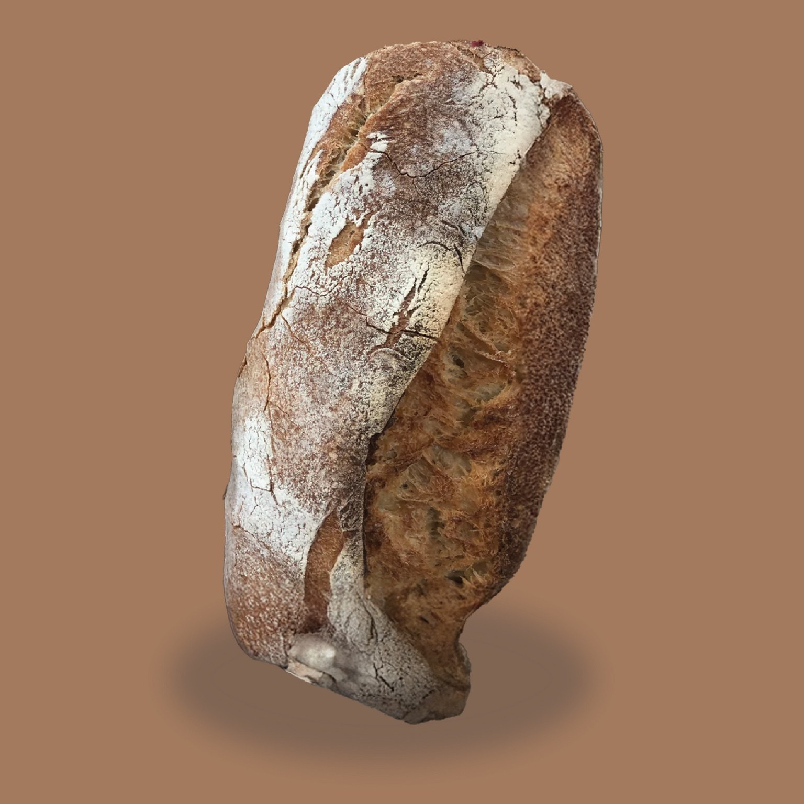
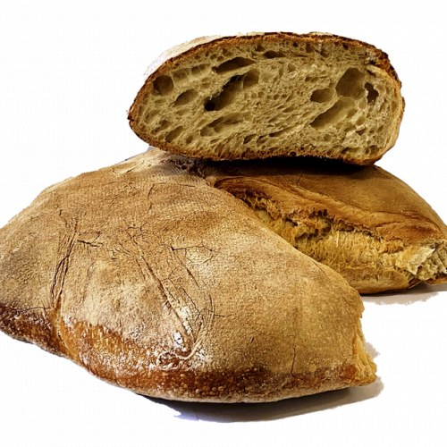

Se cerchi il vero Pane Cafone a Tenerife, da El Capricho Rosticceria Napoletana trovi ogni giorno un pane preparato secondo la tradizione italiana.

Ogni mattina prepariamo il nostro pane cafone con una lunga lievitazione, farine selezionate e cottura in forno elettrico professionale. Utilizziamo lievito di birra e rispettiamo tempi di lavorazione che garantiscono un pane fragrante fuori e morbido dentro.
Ogni pagnotta pesa circa 700 grammi ed è ideale per accompagnare qualsiasi piatto della cucina italiana.

La caratteristica principale del pane cafone è la sua crosta spessa, dorata e croccante che racchiude una mollica soffice, ricca di alveoli e dal sapore intenso. È il pane perfetto per chi ama il gusto autentico della tradizione napoletana.
Il nostro pane viene consigliato praticamente con tutto il menù. È perfetto con:
Molti clienti acquistano il nostro pane esclusivamente per preparare le classiche polpette napoletane.
Prepariamo pane fresco tutti i giorni. È disponibile:
Pane intero: 3,00 €
Mezzo pane: 1,50 €
Puoi acquistarlo direttamente presso El Capricho Rosticceria Napoletana a Las Galletas (Arona), Tenerife. Ogni giorno riceviamo clienti provenienti da:
Sì, ogni mattina.
Sì.
Circa 700 grammi.
3 € intero e 1,50 € metà.